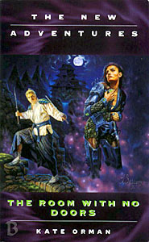

|
The Room With No Doors
|
BASIC PLOT DOCTOR COMPANIONS MATERIALISATION CIRCUIT Pg 256 The TARDIS dematerializes, taking Joel home to 1996 and Penelope back to 1883 before returning to Japan. It has been suggested that Bullet Time takes place in this gap as well. (We don't see any of these materiatisations apart from the last one, when he returns.) PREPARATORY READING CONTINUITY REFERENCES Pg 4 "There was a food machine, programmed with about four bazillion recipes. A huge, untidy scrapbook was leaning against it, with the codes for each meal written down in a jumble of Gallifreyan and English and other languages Chris didn't recognize." The TARDIS food machine appeared in many black and white stories. The code book for it was seen in The Edge of Destruction. "You bastard you could have killed me. If it hadn't been for Elizabeth Shaw, he wouldn't be here now, breathing, tasting this." Liz Shaw appeared in the previous book, Eternity Weeps where she (and a fair number of other people) died. Chris believes it to be his fault, and much of this book deals with the repercussions from that. The first phrase is Chris's memory of Liz pleading with him to kill her (pages 151-153 and the line itself appears on page 162, although without the emphasis). Instead, by not killing her, he let her die in agony as the virus took hold and the scientists tried to keep her alive to get the formula for the antidote from her mind. The second sentence references the fact that Chris only survived because Liz gave him the antidote. Pg 5 "He had dark hair and a lined face and deep blue eyes, and was wearing an oversized orange dressing gown with a little cat embroidered over the breast pocket." The Sixth Doctor had a little cat badge in much the same place on his costume. Pg 13 'Isha' is Japanese for 'Doctor'. Later (Pg 23) he is referred to as 'Yukidaruma-san', meaning 'Mr. Snowman,' due to his having previously been found in the snow. "His eyes especially. They were the colour of the sky, or of the ocean on a stormy day, or perhaps they were the colour of -" Novelisations featuring the second Doctor kept changing his eye colour, and the NA writers ran with this idea, leading to a Doctor whose eye colour could never clearly be defined. Pg 17 "In his time, the cities were a thick film that covered the earth, even the oceans." We saw Chris's Earth in Original Sin. Pg 19 "The Doctor was at least one thousand and three years old." SLEEPY made it clear that the Doctor reached his one thousandth birthday during Set Piece. This doesn't fully square with the new series, in which the Doctor states that he is 900 years old, but Only Human tries to resolve this by stating that he's been travelling for that long. Pg 20 Reference to Roz and Benny. Pg 21 "And the Doctor would point out his several centuries of seniority, and Roz would say that she was dead and you can't get any older." Roz died in So Vile a Sin. Many of the NAs after this time were still dealing with the repercussions of this event. Pg 22 "I was - I'm an Adjudicator, a sort of policeman." Original Sin. Pg 25 "'This is why I'm here,' said the Doctor, surprised. 'There really is a temporal distortion.' The Roshi gazed at him. 'This terrible waiting,' whispered the Doctor." The Doctor knows he is going to regenerate soon - indeed, it is the basis of the whole book in many ways. This prefigures the Telemovie. It's been theorised that it was Liz's death in Eternity Weeps which made the Doctor realise his time was up. See Symbolism. "Do you remember why I couldn't defeat the jiki-ketsu-gaki?" There's an unrecorded adventure here with (it turns out later) a vampire, which happened 10 years ago Earth time. The Doctor, in his Seventh incarnation, spent some months in this location. It's unclear when this could have happened. (It's possible that he left Benny somewhere for a while - that seems the most likely option.) Pg 26 "The Tao that can be spoken is not the eternal Tao." It may or may not be a deliberate reference, but Taoist principles also infused Iceberg with much of its imagery. This links to lines like "The way that can be spoken of is not the unchangeable way. The name that can be named is not the unchangeable name." (Pg 143 of that book) Pg 27 "'We lost a friend,' said Chris. 'The Doctor had known her for years.' The nun looked at him silently." This is Liz Shaw. Eternity Weeps. "It's a long story, but... we were both poisoned, and there was only enough antidote for one us. She insisted I take it." Eternity Weeps, obviously, but also a deliberate reference to The Caves of Androzani, in the way that Chris describes it now. It's not really what happened, because a) Liz said that she was a vector for the disease and the injection wouldn't work on her as the disease was too advanced and b) Jason was also present. But Chris clearly has survivor's guilt, so it's no surprise he's reframing the story. Pg 29 "You know, Chris, if this is a natural phenomenon, we could have this sorted out by teatime tomorrow." In a book with the level of symbolism that this one has, you start seeing things. This could well be a reference to the final speech in Survival. The Doctor has enjoyed tea throughout all his incarnations. "If I've got to go regenerate again, go through that miniature death one more time, I want it to be on my own terms." The Telemovie. This also references the fact that the NAs had assumed that only an event of momentous power could bring down the godlike seventh Doctor, where in reality he dies in a simple accident. The idea that the Doctor 'dies' whenever he regenerates is further reinforced in the new series episode The Parting of the Ways. Pgs 29-30 "Time won't have her Champion for much longer." Yes, they were shutting all aspects of the NAs down. The Doctor has been Time's Champion on and off since Timewyrm: Revelation, and at its most obvious in Love and War. Pg 30 "He'd seen that girl with the face of a clock once before, in another of those dreams. 'Is this your new steward?' she had asked the Doctor. 'Or have you brought me a sacrifice?'" Ace was, alternately, both the Doctor's steward and his sacrifice in many ways. The girl with the face of a clock is Time. Like much of the book, these are images that have resonated throughout the NAs. (As an aside, the image is also shared by the clock-faced people in Anachrophobia.) "'Make it quick,' Liz had told him, and he hadn't been able to do it, hadn't been able to spare her those slow hours of knowing." Eternity Weeps, although we don't hear her say those words there (but a lot of Jim Mortimore's dialogue was sentence fragments). Pg 32 The Doctor's pockets are emptied. Typically, he appears to have more in them than they could possibly hold. Pg 35 "'I hate goodbyes,' whispered the Doctor. 'And I want to get an early start.'" The Doctor has often repeated this sentiment about leaving. Pg 39 "Sometimes I think about going home. Hiding in the libraries and the cloisters." This prefigures Lungbarrow. Pg 40 Liz's 'bastard' line from Eternity Weeps is repeated again. Pg 44 "'Miss Penelope Gate,' said the small figure." As we all know, the Telemovie stated that the Doctor was half-human. In the original plans for the American series, the Doctor was due to meet his father and mother in the final story of the first season. Later books, particularly Unnatural History have suggested that the Doctor's father is called Ulysses and his mother is Penelope. Both these characters appear in flashback as, possibly, the Doctor's parents in The Gallifrey Chronicles (and The Infinity Doctors). And Penelope here has invented a time machine. Miss Penelope Gate, then, may eventually be the Doctor's mother (although Lungbarrow suggests a different theory). Pg 45 Joel: "This is too strange. We must have achieved infinite improbability, or something." It's not really a surprise that Joel is quoting The Hitch-Hiker's Guide to the Galaxy. Pg 46 Penelope has invented a time machine: "'Invented?' said the Doctor. 'You're Victorian, surely. What does it run on, steam? Static electricity?'" The Mark of the Rani (perhaps facetiously) and The Evil of the Daleks (less so). Pgs 47-48 "And guess who got booted out of HQ to take care of it, two days before the Professor X movie premiered?" Professor X is the Who universe equivalent of Doctor Who (this goes back at least to Conundrum). This then, dated in the text to May 1996, is the Who universe equivalent of the Telemovie, which was obviously very much in everyone's thoughts when The Room With No Doors was published. Later on, Joel states that he never got the opportunity to see whether the option on the series had been taken up. He would have been disappointed. However, he'll be much happier now 2005 has come along! Pg 48 "So you've been working for the Admiral all this time?" The Admiral is Benny's father, last seen in Return of the Living Dad. Reference to the death of Roz (So Vile A Sin). "I had to impersonate a monk a while back." Warchild. Pg 49 "Mr Cwej (which was pronounced Kwedge he had told her)" This is not the correct pronunciation of the name (it should be 'Shvay') but Chris prefers it, as established in Original Sin. See also later on. Pg 50 "The underground railroad has spread all over the planet; I've lost count of how many stranded aliens we've helped out. It'd be easy to spend a lifetime doing that. I think the Admiral wants me to follow in his footsteps. Take over when he's too old to be running around, dodging the CIA." Return of the Living Dad. The CIA is either the Celestial Intervention Agency from The Deadly Assassin, or the American one, assuming they're not the same thing (see The King of Terror and No Future for two takes on this). Pg 51 "The weirdest thing was when I met the Doctor. Back in '87" This is another 'appearance' of the Eighth Doctor in the NAs (the first was in Damaged Goods). Pg 53 "That mutated Tzun battery?" We met the Tzun in First Frontier. The Doctor is about to meet them again (although they are never stated as such) in Bullet Time, which, it is suggested, happens during the closing pages of this book. "Is your arrogance pure egotism, or do even the greatest scientific advances of my age seem like the dabblings of children to you?" This, like Penelope herself, reflects back to An Unearthly Child. Pgs 53-54 "'Imagine paying Shakespeare a visit -' 'Been there.' 'Or Marco Polo.' 'Done that.' 'Or Richard the Lionheart.' 'Bought the postcard.'" The Empire of Glass/The Plotters (the fourth Doctor also mentioned visiting Shakespeare in City of Death), Marco Polo and The Crusade. Interestingly, all the examples that Penelope picks refer to First Doctor adventures. Pg 55 "This was Justice. Buried forever in a box, in the dark, alone, because you ought to have been the one who died, you ought to have been the one who was a hero, you ought to have done better, you're never good enough and you'll never be good enough again!" This is very similar to something that the Doctor says towards the end of So Vile a Sin (Pg 309). Pg 56 Reference to Liz (Eternity Weeps). Pg 57 "Yes, but is it Kannon?" Reference to raging online debates of the time about canonicity, usually along the lines of "This book was great"/"Yes, but is it canon?" It's one of those chapter titles that make you wonder if large parts of the book were written to accomodate the joke. Pg 64 "On the other hand, how many Time Lords would bother to stop and look at a flower? After a few thousand years in the sterile air of the Capitol, your emotions simply withered away" The flower that the Doctor is looking at here refers to the "daisiest daisy" from The Time Monster (and hence the flower imagery in Timewyrm: Revelation). The Doctor's increasingly frequent thoughts about Gallifrey prefigure Lungbarrow. Pg 65 "'You said you'd have a lot of experience with deities.' 'None of it good,' said the Doctor. 'It's amazing how a spot of omniscience can make someone miserable company.'" Right back to The Web Planet, but certainly stopping off along the way at Pyramids of Mars, the Timewyrm series, The Pit, Falls the Shadow, The Also People and Eternity Weeps among numerous others. Pg 73 "'Ideally, the way of the warrior creates elite fighters, deeply spiritual soldiers free from the fear of death.' 'And lots and lots of corpses.' 'Yes. Unfortunately,' said the Doctor, 'so does meticulous planning.'" The New Adventures in a nutshell! On what happens when you die: "'Well, everyone claims to know.' The Doctor was creating a single, soiling pencil shaving. 'But I think the Ikkaba really did. They weren't telling, though. They just walked into the fire. You remember the Turtle, you know what it's like.'" SLEEPY. This also prefigures the death and return to life of Grace and Chang Lee in the Telemovie. The Ikkaba are important in Walking to Babylon. Pg 80 "The Doctor said, 'All those with psychokinesis, raise my hand.'" This is one of the finest lines in a book riddled with fine lines and marvellous moments. Pg 81 Kame coming back from the dead touches on ideas about regeneration as well as being a foreshadowing, again, of Grace and Chang Lee's resurrection in the Telemovie. Pg 84 Another reference to the Doctor's colour-changing eyes. "'Psychic healing?' said Mr Mintz. 'Possession? Alien symbiotes?'" Haven't seen a lot of psychic healing in Doctor Who. Possession of a dead body, though, pops up quite a lot (Pyramids of Mars, Paradise Towers et al) and the idea of Alien symbiotes bringing someone back to life prefigures Beltempest, weirdly enough. Pg 86 "'So what are you going to give the daimyo?' said Chris. 'Not jelly babies this time.'" Jelly Babies are part of a balanced Time Lord diet, and have been around, on and off, since Robot. Pg 88 "You can meet my folks. I haven't visited for... it must be more than a year now." Chris's parents appeared in Original Sin, although it's not clear if he's visited them more recently. Pg 89 The Doctor: "But I feel I am ready to believe anything. Even turning back time to bring the dead back to life." A slightly snide comment on the Telemovie. Pg 90 "Joel thought of the Doctor he'd met back in 1987, and wondered how much longer this incarnation had to go." Joel had met the Eighth Doctor in 1987. "'You guys at least had time to do your homework. I didn't know where or when the heck we'd end up.' 'I remember what that was like.' The Doctor smiled. 'How goes the cleaning-up-after-me business?'" Doctors One, Two and Five were, seemingly in little control of the TARDIS. The cleaning-up-after-the-Doctor business was seen in Return of the Living Dad. Mention of Tegan Jovanka. "The usual crop of invasions - the Cybermen were the worst of it. The bloody Ra'ashetani had another go in 1988. Eighty-eight was a bastard of a year, for some reason." The Tenth Planet (1986), and an uncertain reference. 1988 was a bad year because of the Nemesis statue coming to Earth in Silver Nemesis. Pg 91 The Doctor's titles: "President of the High Council of Time Lords. Keeper of the Legacy of Rassilon. Defender of the Laws of Time. Honorary Kang. And so forth." The Doctor, as he admits to Joel later, is no longer Time Lord President, although he has been. He was made an honorary Kang in Paradise Towers. Pg 92 "The Time Lord steepled his fingers. 'Mr Mintz,' he said. 'What do you want?' 'Never ask that question,' growled Joel. The Doctor looked at him blankly." This is one of the most famous lines from Babylon 5 (Joel is impersonating Kosh), which the Doctor has clearly never seen. "'No meat or fish for me, please,' said the Doctor absently." The Doctor became a vegetarian in The Two Doctors and it is important to the plot of Human Nature. He seems to abandon this diet in his Eighth incarnation. Pg 93 Reference to Liz's death during Eternity Weeps. Pg 95 The retelling of the story of the Snowman (the Doctor), and his fight with the jiki-ketsu-gaki (a vampire) in symbolic form: "The monk instructed him to go to the castle and allow the jiki-ketsu-gaki to drink from him. She would be drinking melted snow, of course, instead of blood, a trick which would destroy her." This is suspiciously similar to the way that the Doctor defeats the Vampires in Vampire Science. Pg 100 Another appearance of the 'bastard' line from Eternity Weeps. Pg 102 "OK, I'm not good enough, I found that out in Turkey, and you know it, so what do you want me to do?" Chris's prayer to the Goddess references Eternity Weeps. Pg 104 As Penelope walks towards the Room with no Doors in her dream she passes through a Japanese garden where "a great flood of butterflies came out of nowhere, pouring through the garden in a silent rush of orange and black. She put her hands in front of her face to ward off the softly flapping wings, the myriad legs and feelers. In an instant they were past her and gone, soaring off into the hidden distance." This could prefigure the Butterfly Room that the Doctor has created in the TARDIS by Vampire Science. Pg 107 "Joel realized the Doctor was about an inch off the floor. Very clever, old man, but I've seen the future and you're not it." The Eighth Doctor again, whom Joel has met. Pg 110 Reference to the TARDIS translation circuits. Pg 112 The true story of the Doctor's defeat of the vampire: "'She was greedy,' he said. 'And she'd never drunk blood like mine before.' What kind of blood? wondered Aoi. 'I let her drain me until she thought I was dead. When she was sleeping, I set the Castle on fire.'" This vaguely compares the pragmatic Seventh Doctor (this version) with the more poetic Eighth (the mythological description above). Pg 114 "Joel prayed silently for ventilation ducts. But there was nowhere to run to. He could not move." Ventilation ducts: never around when you really need them, but a staple of Who throughout recorded history. Pg 123 "He had jotted them down on the back of a cafe menu, a flier from an organization called Greenpeace, and a parchment covered in writing she couldn't understand." It's possible that this is the menu from the cafe in Set Piece. The parchment could be literally anything. Mention of Tony Cooke, from Return of the Living Dad. Pg 124 "Penelope didn't think it was a very good impersonation of the samurai's voice, but it seemed to calm whoever's sleep had been disturbed." The Doctor's powers of imitation were seen in The Celestial Toymaker and No Future, amongst other places. They seem to be less powerful here. Pgs 127-128 Discussion of Regeneration: "'The first time...' the Doctor said, snapping Chris out of his reverie, 'I don't remember, I was unconscious. The second time...I don't want to talk about.' 'The third time?' 'Unconscious.' 'The fourth time?' 'Atypical. There were some strange time and energy effects involved.' 'But, you know, what does it feel like? Is it good or bad?' 'Good,' said the Doctor, 'in the same way that driving a vehicle very, very fast is a good feeling, until pow!' He slapped his hands together suddenly. 'Like being shoved through a window. That's what it was like the fifth time.' 'What about the sixth time?' 'Unconscious.'" In order, obviously, The Tenth Planet, The War Games, Planet of the Spiders, Logopolis, The Caves of Androzani, Spiral Scratch and Time and the Rani. Pg 128 "You feel awful, because you know you are going to die. Again." This is borne out in The Parting of the Ways. "'But you said...' But Joel said. 'You said you knew you were going to regenerate because you'd found out about one of your future selves.'" Chris is avoiding telling the Doctor what Joel said about meeting Doc 8, but it's also possible here that he's referring to Eighth Man Bound, of which we hear more in Lungbarrow. Pgs 128-129 "But what if it was something random? Like a stray laser bolt? Something he couldn't predict or control? What if it was an accident?" And it was, of course. The Telemovie. Again referencing previous NA assumptions about what it would take to kill the seventh Doctor. Pg 130 "Heck, I saw that look a month ago, in the eyes of a Lacaillan scout." We met Lacaillans in Return of the Living Dad. "The Doctor (how do I use our future meeting?) had brought the scout to us after bewildering him to a standstill. I didn't get the full story, something involving the London phone system, amphibians, and static electricity." 'Bewildering him to a standstill' certainly sounds like the Eighth Doctor. Static electricity may or may not have involved Daleks as well as Lacaillans (The Evil of the Daleks). Pg 131 A report of Joel's meeting with the Eighth Doctor. "The Doctor asked me: 'Are you sure about this? Very sure?' As though he knew what I was planning. Supposedly he can't read your mind." The first words spoken by the Eighth Doctor in the NAs. And, as the Telemovie proved, this one could read your future, although Joel is missing the obvious point that he is now with an earlier incarnation of the Doctor, who, of course, lived through it. Mention again of Tony Cooke, Little Caldwell, the Tzun, and the fact that Joel had fallen back in time ten years, all from Return of the Living Dad. Pg 132 "It's not like the Admiral's big, doomed attempt to change history." Return of the Living Dad again. Pg 138 "I blew up all those Martians without giving it a second thought, remember?" GodEngine. "We left that behind us on Yemaya 4! And it was just a red herring anyway! There was no turtle!" SLEEPY. Pg 139 "Do you remember when I shot those two Nazis?" Just War. "Imagine what it's like to know you might wake up, suddenly, completely different. Suddenly you like jazz instead of opera; suddenly you can't stand pears when you used to love poires en douillon; suddenly you're shouting at your companions or you're seeing patterns that you never used to see -" Jazz may be a reference to Silver Nemesis. Shouting is likely a reference to the sixth Doctor. The patterns thing is another NA staple, although it might be a reference to the eighth Doctor talking about humans seeing patterns in things that aren't there. "Teaching me? Training me? Changing me? What are you trying to turn me into?" The Doctor, it would seem, was trying to turn Chris into a hero. Or possibly a Time Lord, given the original future planned for Ace in the never-made Season 27 and Death Comes to Time. One can only hope he never found out what Chris eventually turned into in Dead Romance. Pg 151 refers to Oolian knickers. The Oolians appeared in Original Sin, although little mention was made there of their underwear. "I'm the President of the Intergalactic Flora Society." I can't recall if the Doctor has mentioned this before. Pg 158 On the Room with no Doors: "Nothing more than I deserve. I did this to the one before me, after all, locked him up and threw away the key." The theory that the Sixth Doctor has been locked in the Seventh's mind, fuming and impotent, stretches right back to Timewyrm: Revelation, and is also seen in detail in Head Games. "'He was so scared of what he might become that he wouldn't do what needed to be done. He refused to plan, refused to anticipate. He'd never consider a pre-emptive strike against evil because he was too scared of even being capable of planning one. People were dying because I didn't know what I was doing.' He looked up at Penelope. 'So I had to make a change.'" Another NA theory was that the Doctor deliberately killed his sixth self (first suggested in Love and War), and this gives the justification for it. The sixth Doctor appears to be scared of becoming the Valeyard from Trial of a Time Lord (although Love and War says his hate of the seventh will eventually turn him into the Valeyard, something we see figuratively in Head Games). Pg 168 Reference to both Benny and Roz. "During a Jovian fuel stop." Jovian means 'Of Jupiter'. The fourth Doctor had a pilot's licence for the Mars-Jupiter run in Robot. Pg 171 "The Doctor was careful not to let his surprise show. He had that sudden sinking feeling he sometimes got during chess, when he realized his opponent had been patiently watching his combinations and seeing through the lot." Chess was a constant presence during the life of the Seventh Doctor, right back to Silver Nemesis. Pg 175 Reference to Roz, Liz Shaw and Eternity Weeps. Pg 176 "You must be tough as nails to have done this for over a thousand years." Reference to the Doctor's age. The Doctor hasn't actually been adventuring for a over a thousand years, that's only his age, but Chris is emotional and, I think, being somewhat poetic. "You saved my life, and Roz's, right back at the beginning." Original Sin. "So if there's any way I can stop, if it's OK for me to pick a planet and stay there, can we talk about it?" Chris leaves the Doctor to stay on Gallifrey in the next story, Lungbarrow. Pg 183 "The fanzines that had never got to issue one, the Professor X: The New Adventures submission he'd been mucking around with for two years." Professor X, as mentioned, is the Who universe equivalent of Who. This, coupled with the fanzines reference, is the best example of NA self-referentialism crawling up its own arse that I can think of right now. Although it still made me smile. Pg 188 The chapter title, 'Time's Arrow' is both an episode of Star Trek:TNG and a title of a book by Martin Amis about a man living his life backwards in time. This may or may not be relevant. Another reference to Little Caldwell (Return of the Living Dad). Pg 195 "'Oh man,' said Mr Cwej. 'This can't be happening. He can't just die by -' He stopped, biting into his lip so hard Penelope thought it would bleed. 'By what?' 'Oh Goddess,' said Mr Cwej. 'By accident.' Which of course, in a couple of adventure's time (The Telemovie), is exactly what happened. Pg 196 "Have I crossed for good into the mental prison the others have prepared for me? Not sure. Don't think so. Feels different this time." The final sentence here is from just before the Doctor's regeneration in The Caves of Androzani. The sixth Doctor was in a mental prison in Head Games. Pg 202 "He thrust the jacket into her hands. She was surprised by the weight of it - the pockets were filled with objects." This has always been true of the Doctor's jackets. See also Alien Bodies. The contents include a gold pocket watch which tinkled like a music box when you opened it (Pg 203, seen in the Telemovie), a transparent folding wallet, filled with nonsensical business cards (Pg 204, and something similar was previously seen in The Two Doctors), and a hand-knitted toy bear (Pg 204, which may even be Steven's from The Chase). Pg 218 makes it clear that it took Penelope nearly an hour to empty the pockets completely. Pg 208-209 "'We were poisoned,' he said dully. 'She insisted I take half the antidote, and carry the rest to safety so that more could be made from the sample. Then she asked me to kill her.' 'To spare her the pain of the poison?' He nodded. 'And you could not.'" Eternity Weeps, but see Continuity Cock-Ups. Pg 209 "She hated me because I couldn't kill her. And Imorkal did it anyway." Eternity Weeps (and a parallel universe version was in Blood Heat). Although see Continuity Cock-Ups. Pg 211 "Body calling up every last scrap of oxygen, enough to last me for a few more minutes." The Doctor's ability to not breathe for a while goes back to Terror of the Zygons, as well as Four to Doomsday and The Caves of Androzani. Pg 213 "I've already changed so much in this lifetime." Indeed, from the pratfalling goon of Time and the Rani, through the genocidal killer of Remembrance of the Daleks, to the manipulative man in Ghost Light and so into the New Adventures. Now he is old, and careworn. "Not even the person I used to be. No need to lock him away, no need for any of me to blame myself. I keep thinking as though I killed him, but I didn't. I'm not dead." The idea of the Doctor keeping his furious Sixth self locked away in his head, which stretches back to Timewyrm: Revelation, is swiftly and summarily resolved. "I'm not just who I am right now: I'm who I was and who I will be too. I am the Doctor. I am the Doctor. I AM" He shouts this out in the Telemovie and there's a glorious moment in The Dying Days when it's the end of a whole statement of self-belief. Pg 214 "Through streaming eyes I somehow see Death, reclining against a tree stump, watching with a smirk. 'There now,' she says, 'that wasn't so bad, was it?'" The Eternal character (or concept) of Death has appeared on and off since Timewyrm: Revelation. She doesn't appear again until Camera Obscura. Pg 224 The chapter title is 'Unturtled', another reference to SLEEPY. Pg 231 Mention is made of the Doctor's paisley scarf, first seen in Time and the Rani. Also of Little Caldwell, once again from Return of the Living Dad. Pg 232 'alt.alien.visitors' is a reference to on-line Who fandom. Reference to Star Trek and Professor X again. "I was very impressed with your handling of the Gaffney Incident. Benny told me about it the last time I saw her." It's unclear what the Gaffney Incident was (although it's named after Sean Gaffney, a prominent online reviewer of the NAs back then). You know who Benny is. Pg 237 Joel has to kill the Doctor: "The one thing the Daleks had never done, the Cybermen had never done, the Zygons and the Kraal and the Autons had never done? The one thing that bullets and lasers and explosions and poison had never done? Joel Andrew Mintz, with a borrowed sword." Daleks and Cybermen from various stories. Zygons from Terror of the Zygons, the Kraal from The Android Invasions, Autons from Spearhead from Space and Terror of the Autons. Pg 241 "The explosion didn't even make the Doctor flinch." This is similar to the moment the Doctor walks out of the Psychic Circus in The Greatest Show in the Galaxy. I mention it, because Sylvester McCoy reports that the explosion of the circus was far bigger than it was supposed to be, and, if you run the video really slowly, there is about a frame's-worth where he flinches, but he recovers at such speed it's incredible. This means the reference is probably deliberate. Pg 242 The Doctor builds his device to open the pod using, amongst other things, a paperclip and a fluff-covered toffee. Very Third Doctor, but even moreso, if you get my meaning. Pg 246 Brief mention of Ogrons Pg 247 Reference to Liz, Roz and (maybe) Kat'lanna dying recently. Eternity Weeps, So Vile a Sin, Head Games. The ambiguity around Kat'lanna dying is a reference to Christmas on a Rational Planet, which stated outright that she died, even though she quite clearly survived the end of Head Games. This is likely Orman linking the two with some ambiguity, perhaps caused by the Carnival Queen trying to mess with Chris's head. Pg 250 "'Speaking of history, Mr Cwej -' 'It's "Shvay",' he said. 'Not "Kwedge".' He smiled." Original Sin first stated that it should be pronounced the former way, but Chris prefers the latter. Here, he reverses that decision. Mention of Admiral Summerfield (Return of the Living Dad) again. Pg 252 Another mention of said Admiral Pg 254 "'You're worse than Albert,' he said." The Doctor met Albert Einstein in Time and the Rani, during which he saw the TARDIS. Pg 256 Final mention of Liz (Eternity Weeps). Pg 258 "'I had to fill out this huge form, and one of the questions was about next of kin. In case I was killed in the line of duty.' 'Don't worry,' said the Doctor. 'If anything ever happens to you, I'll make sure your family is all right.' 'Actually,' said Chris, 'I was thinking of you.' Foreshadowing of Lungbarrow. Pg 259 "Chris nodded. He waved his arm at the snowman as though it were a work of art. It's irregular noseless face beamed back at them. 'Well, what do you think?' 'Nine out of ten, Chris,' said the Doctor." This references the end of The Deadly Assassin, where Borusa gives the Doctor eight out of ten. OLD FRIENDS AND OLD ENEMIES NEW FRIENDS AND NEW ENEMIES Kadoguchi-Roshi, Dengon, Ese Kame, a Village Headman and various children. Sonchou-san, the headman of Heduki, his wife, Mikeneko, and their children. Various other surviving villagers. The blacksmith, O-Kajiya. Miss Penelope Sarah Gate, from 1883. The Kapteynian's leader, Talker, formerly known as Gardener. The Kapteynian trapped in the pod is called Psychokinetic. Various other Kapteynians who stay on earth at the end
SYMBOLISM Pg 26 The nun Chiyomo, like the Doctor, knows that she is dying. Chris thinks he is in love with her. She dies during the course of the book, not at all heroically. Pg 30 "Risking your life was one thing, but knowing you were going to die, knowing there was no escape..." Chris is thinking about Liz dying of poison and Chiyomo, but he could as well be thinking about the Doctor. Pg 44 Miss Penelope Gate is a Victorian inventor who has invented a time machine. As such, she's vaguely symbolic of the First Doctor who, in the early adventures, appeared to be almost exactly that. She may also be a reflection of Verity Lambert, who, in a way, built the original time machine back in 1963. This idea also connects with the theory that she is the Doctor's 'mother' as mentioned above. Pg 60 Kame is a Samurai, a hero warrior, who used to be sworn to a master who then died. In these respects he greatly resembles where Chris thinks and fears he is going to be soon. Pg 61 Kame speaks of the wisdom of knowing when not to fight, when it takes greater strength not to draw your sword. In this way he represents the Seventh Doctor of the final New Adventures, careworn and trying to avoid the deaths. Pg 65 "'Schrodinger's Cat,' said the Doctor. 'It could be anything until we open the box.'" This famous aspect of quantum theory is being used to symbolize regeneration. It's a metaphor that runs throughout the book, most notably at Pg 213, when, as the Doctor pulls himself out of the ground, he's not certain whether he will have regenerated or not. Pg 74 "Penelope found herself wishing for the three hundredth time that she had never read The Cask of Amontillado." Penelope and Joel are hiding together in a box, and she's getting increasingly claustrophobic. Much of the imagery throughout the book is about the feeling of entrapment. (On Pg 84 Penelope feels 'walled in, trapped in the dark.') Pg 114 Joel as well: "He could not move." Pg 171 "The Doctor was careful not to let his surprise show. He had that sudden sinking feeling he sometimes got during chess, when he realized his opponent had been patiently watching his combinations and seeing through the lot." The fact that the Doctor here admits to losing at chess implies that his manipulative skills, almost always represented by the chess metaphor, are failing him. Pg 192 One of the most vivid images in the whole run of NAs, of how much this Doctor has suffered to help others: "'Doctor,' she said firmly, 'we cannot remain here. It's far too dangerous.' She tried to take the child from his arms, and his face crumpled up with pain, and that was when she realized the child had been shot dead while he was holding her and the head of the arrow that had penetrated the girl's body was protruding from his back." Pg 197 "Weight on me. Earth holding me. Can't move. They've buried me. They've gone on their way. They've buried me." The Doctor, physically buried in the ground, is symbolic of the Room with no Doors that he feels will bury him in his own mind when he regenerates. His subsequent rising from the Earth coincides with his self-forgiveness. Pg 205 Kame: "But then, were he struck down, Kannon would simply resurrect him - it was a strange mercy, to feel the blade or the shaft bite deep, to feel the overwhelming moment of blackness, and then to find yourself struggling back to life, like a man dragging himself from the pit of despair to fight on." Obvious parallels to regeneration. It's deliberately not clear whether the 'mercy' that Kame is thinking of is death or the rebirth. Pgs 205-206 "After a while, Kame started over again. 'When I was a young man, I thought that losing my master was the worst thing that could possibly happen [...] Once it had actually happened, though, it did not seem so terrible.' Kuriisu-san [Chris] didn't answer, though Kame could tell from his face that he was listening. 'It's true, I almost decided to follow my master into death. I lost nearly everything, but I did not lose everything. I kept my life, my health, my honour. And I found useful work, work that required courage and intelligence. It was a matter of rethinking my views on life, as we all must do from time to time.'" Kame fills four or five different functions in this book. Here he is representative of a Chris of the future, who can manage and survive the death of the Doctor. Pg 223 "The man was filthy, covered in fresh soil. His eyes blazed in his dirt-streaked face. He looked like a demon, something that had fought its way free from hell and was here to curse them all. In his arms, he held the corpse of a young peasant girl. Her rough clothes were soaked with blood. 'See what you've done,' he breathed, then he swayed and fell forward, on to his knees." The Doctor, here, has finally come full circle, through the manipulation and the 'unavoidable civilian casualties' of Love and War and other such, back to telling the oppressors that when people are dying, something is wrong. In a number of ways, it is more this book that wraps up many of the thematic patterns of the New Adventures than either Lungbarrow or The Dying Days do. Pgs 224-225 are a stream of consciousness from Psychokinetic, a Kapteynian who has been trapped in the pod for a very long time. Again, this follows the entrapment motif that runs through the book. And, with his release on Pg 245, the motif of release is also fulfilled. Pgs 242-243 As the Doctor prepares his pod-opening device, he tells the story of a valuable antique tea-cup, 'an ancient simple piece, with all its imperfections preserved'. A young monk breaks the cup, but explains it to his master by telling him that it was 'time for your cup to die'. Throughout the book, the Doctor is trying to hold a tea-ceremony with the Roshi. On Pg 246, he realizes that the ceremony requires him to drop the tea-cup and break it, acceptance that things move on. Pg 250 "'Speaking of history, Mr Cwej -' 'It's "Shvay",' he said. 'Not "Kwedge".' He smiled." Chris's decision to return to the correct pronunciation of his name suggests that he finally accepts who he is. Pg 251 "'The greatest masterpieces,' said Roshi, 'are created directly out of our own natures, when the busy, worrying, scheming mind is put aside for that single moment.'" The NA Doctor, again, is being slowly worn away. Pg 255 "'I have been,' he pronounced carefully, 'de-angsted.' And so have the NAs. Pg 257 Psychokinetic has lost his powers after being removed from the supercooled environment of the pod and his worried that he will be useless now. The Doctor has been worried about much the same thing as regards his regeneration. Of course, Psychokinetic suddenly discovers he still does have his powers when the need arises. Pg 259 The Doctor has been referred to throughout as the Snowman. At the end of the book, he and Chris build a new one.
CONTINUITY COCK-UPS PLUGGING THE HOLES [Fan-wank theorizing of how to fix continuity cock-ups] FEATURED ALIEN RACES Te Yene Rana is a Caxtarid (Return of the Living Dad and possibly Blue Box) from the planet Lalande 21185. She has metallic red hair and eyes, but can otherwise pass for human. She has also brought along with her a number of robots which look like Flying Heads. FEATURED LOCATIONS IN SUMMARY - Anthony Wilson |
|
 |